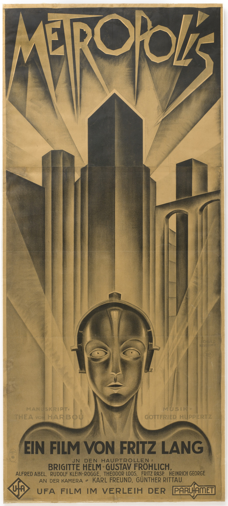

Fritz Lang
1927
114 minutes
This is a classic silent film that you've never properly seen start to finish. It's easy to catch parts of this film played at various bars or art events, but you never gave it your full attention. Until now.
The robot parts remind you of the old Teddy Ruxpin doll you reverse-engineered with your roommate. You were always too poor to own a proper Teddy Ruxpin, or at least one with an intact tape and drive. One of your wealthier cousins had one, but you had limited access to it. Finally your roommate picked up a gently used one at Saint Vincent de Paul with a tape in the player. Like most little nerds, you always dreamed of being able to put any tape you wanted into the player and have Teddy sing along to those tracks. So you were eager to see what happened when you popped a cassette tape full of punk music into Teddy's player.
The results were disappointing. Music streamed through the cheap speaker, but no track played.
Upon examining the tape, you discovered that Teddy's Special Tape had a groove in the top that was missing on regular tapes. You physically traced this to a probe inside Teddy that would look for the groove and refuse to play any tape that didn't have a hole in that location. This was easy enough to remedy. Your roommate had a Dremel, so he simply cut a hole in the top of the cassette tape so the probe would not detect the outlawed tape. Alas, this was to no avail. Teddy still did not move his eyes or mouth to the music.
You took the Teddy Tape and then listened to it in a normal player. Therein lay Teddy's secret. One stereo channel contained the music and speech that was played out of Teddy's speaker. The other stereo channel contained a godawful shrieking that turned out to be an analog signal that told Teddy's mouth and eyes when to move. You were an audio engineer at the radio station, so into the studio you went.
You recorded the analog Teddy track into some software, chopping up a section that moved the eyes and mouth and repeating it at random several times on one stereo track. You then recorded a couple of music/spoken word pieces from other albums. (In particular you chose some spoken word pieces with William S. Burroughs reading selections from Naked Lunch and some other spoken word by trans-drag performer Justin Vivian Bond performing as Pantychrist.) The effect wasn't perfect, but it was disturbing. Teddy read the tracks aloud and this time his mouth and eyes moved in a repulsive stuttering and convulsive matter, as though he were having a seizure. Good enough.
Now that you had conquered the software, your roommate took another run at the hardware. He rewired Teddy so that he could take audio input other than tapes as an override, which allowed you to play CDs and mp3s instead of relying on specially-Dremeled tapes for input. He then rewired Teddy so he could be attached to external audio such as speakers to boost the volume if desired while still keeping the original speaker running.
You decided that it was time to take Teddy into the streets for a public demo and maybe even make some money. You went back into the engineering lab and recorded your roommate's voice reading out several standard insane street panhandler spiels, asking for money for a bus ticket, ranting about the government reading his mind with their satellites and hooking him up to wires, catcalling random women in the style of a notorious Madison street denizen, et cetera. You recorded a good thirty minutes of this material, pitch-shifted it up to an Alvin and the Chipmunks register, and matched it with a chopped-and-screwed analog signal. You then put it on CD on several tracks so it could be randomly repeated.
From there it was off to the thrift shop and the liquor store. You bought a little yellow hat for Teddy to sit in front of him to collect money in and several bottles of one-ounce airplane booze to strew around him. You enlisted your friend and occasional roommate, who was at that time living on the street, to help drink all the little bottles of booze and watch to make sure no one stole Teddy or his money and to grab him and dash if anyone in law enforcement came along. Then (after getting permission from the rest of the officers on the perplexed Executive Board) you fetched the PA system from the labor union office you worked in so you could hook Teddy up to beg for money on Library Mall during the lunch hour. Any profits were intended to be paid to your homeless friend who was Teddy's lookout and bodyguard. Beggin' Teddy got a lot of weird looks, but unfortunately none of the cheap spectators actually gave him any money. It was notorious enough to be referenced in one of the daily cartoons in one of the campus papers the next day, at least.
You kept Teddy around for another year or so to sometimes drag out at parties or show off at the bar until one day your roommate foolishly and impulsively gave the cursed object away to a bartender he had a crush on. The end.
Time to choose something different: